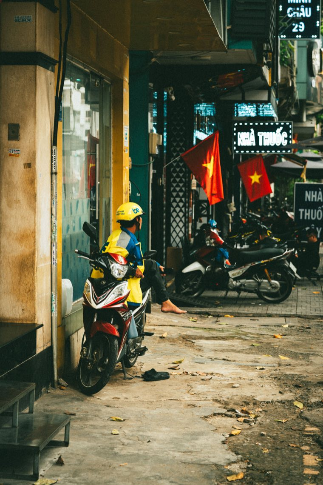

50cc 오토바이는 간단해 보입니다: 사서 헬멧 쓰고 출발. 하지만 서류상으로는 여전히 원동기 차량입니다. 갖춰 두면 좋은 서류 중 하나가 배상책임보험입니다. 주행을 “위험 없게” 만들지는 않지만, 단속을 제대로 통과하고 사고 후 혼자 감당하지 않도록 도와줍니다.
베트남에서 의무 배상책임보험은 이륜차와 xe gắn máy(보통 50cc 이하 휘발유 오토바이가 속하는 범주)를 포함한 원동기 차량 소유자에게 적용됩니다. “여행자용 추가 옵션”이 아니라 차량에 대한 별도 서류입니다.
규정과 요건은 바뀔 수 있으니 구매 전이나 장거리 여행 전에 공식 보험사에서 현재 조건을 확인하세요. 기본 규정은 정부 시행령 제67/2023/NĐ-CP호입니다.
의무보험은 무엇보다 제3자에 대한 책임입니다. 내 오토바이 때문에 다른 사람, 그 사람의 건강이나 재산이 피해를 입었을 때 작동할 수 있습니다. 자차 보험이 아닙니다: 내 오토바이의 흠집, 도난당한 헬멧, 개인 수리비를 보험사가 자동으로 내주는 것이 아닙니다.
그러니 종이 한 장으로 안심하며 오토바이를 사지 마세요. 진짜 안전은 정상 작동하는 브레이크와 라이트, 헬멧, 조심스러운 주행, 서류, 그리고 문제가 생겼을 때 누구에게 연락할지 아는 것입니다.

이전 소유자의 서류가 자동으로 해결해 줄 거라 기대하지 마세요. 의문이 있으면 보험사에 확인하고 명확한 조건으로 유효한 보험에 가입하는 게 간단합니다. 오토바이 가격과 사고 결과에 비하면 사소한 일입니다.
언어나 상황이 확실하지 않다면 현장에서 이해되지 않는 서류에 서명하지 마세요. 먼저 통역하고 도와줄 수 있는 사람에게 연락하세요.
평소 주행 시 오토바이 등록증, 유효한 보험증서, 보험사 연락처를 찾기 쉬운 곳에 두세요. 서류를 휴대폰으로 촬영해 두되 그것만 믿지는 마세요: 단속 규정에 따라 원본이나 법적으로 인정되는 형식이 필요합니다.
저희에게 오토바이는 카탈로그의 예쁜 카드가 아닙니다. 판매 전에 서류, 상태, 기본 기계를 확인하고 구매자에게 무엇을 받는지 설명합니다. 서류로 50cc 확인하는 법은 이 글에, 저희가 오토바이를 사는 방법은 온라인으로 오토바이 사는 법에 있습니다.
이 자료는 참고용이며 개별 법률·보험 상담을 대신하지 않습니다.